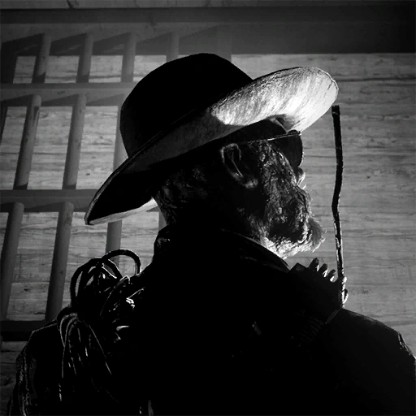

NEWS
Eyes on the suspect.
In-game events, speculation, and updates
07.14.26
Project Boneyard is now live!
Currently waiting for my friend to get home from work so I can play w/ them... SO excited!! I haven't even watched the gameplay trailer yet... more will be written later!
Have fun, everyone!
Finished the trial, here are my thoughts...
07.09.26
Cinematic trailer for Project Boneyard just released!!
I'm at a loss for words!!! To address the elephant in the room first, Amelia makes a return! I wasn't active in the game during her first event so this is super exciting. Seeing Dr. Easterman's full body was also super freaky.
The Biter(?) looks SICK!! I can't quite tell if there's going to be two new enemies... as the person crawling on the floor behind Coyle and the one running w/ metal claws at its feet seem to be two different people? I guess we'll find out. Love that freak's design a TON.
"And if they're good, if they deserve it, then you give them permission to lick the leather."
Fuuuuuuck. There's a lot more added to Leland's character I could only ever dream of. I've written enough here, though, I'll have to save further analysis for another day.
07.08.26
Red Barrels just released a teaser for Project Boneyard! Red Barrels will released more information tomorrow.
Here we can finally see Coyle's new look more clearly, as well as a brief shot of the new ex-pop, the Biter.
What little we see of the new environment includes a haybale, which supports earlier leaks of the environment being a prison farm. Interesting!!
06.26.26
This year's Prime Time event revealed this teaser image on the in-game defective TVs! (As well as a seperate teaster of a possible new ex-pop.)

Most likely this means that Coyle will have a new trial soon enough! Him, Mother Gooseberry, and Franco are the original 3 Prime Assets in the game, and so far Coyle is the only one out of the three that has only 2 trials.
I will be shocked if this ends up not being the case!!